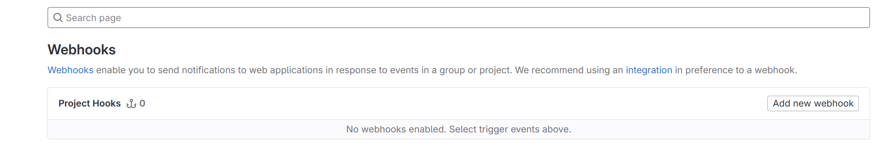
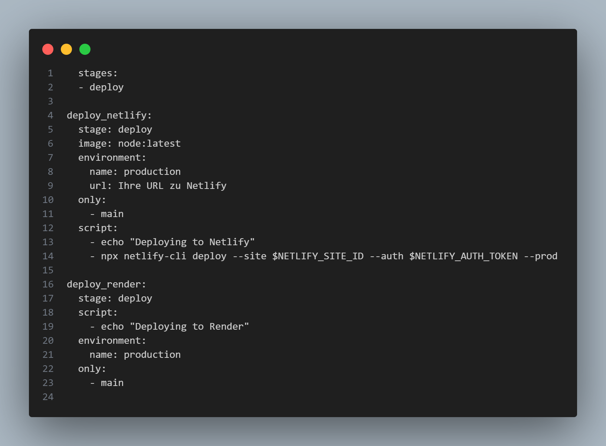

Einsatz von Render im DevOps Prozess
Render wird ähnlich wie Netlify hauptsächlich in den Phasen der
Bereitstellung und im Betrieb eingesetzt. Es unterstützt die
Veröffentlichung einer Vielzahl von Webanwendungen und bietet
automatisiertes Continuous Deployment direkt aus Git-Repositories.
Einsatz von Render im DevOps Prozess
Render wird ähnlich wie Netlify hauptsächlich in den Phasen der
Bereitstellung und im Betrieb eingesetzt. Es unterstützt die
Veröffentlichung einer Vielzahl von Webanwendungen und bietet
automatisiertes Continuous Deployment direkt aus Git-Repositories.
Applikation auf Render einrichten und deployen mit GitLab
-
Melden Sie sich bei Render an oder
erstellen Sie ein neues Konto.
- Klicken Sie im Dashboard auf 'New Service'.
-
Wählen Sie 'Web Service' und dann Ihr GitLab-Repository, das Sie
verwenden möchten.
-
Stellen Sie die Build-Befehle und Veröffentlichungsoptionen gemä
Ihrer Projektanforderungen ein.
-
Klicken Sie auf 'Create Web Service' um die Applikation zu deployen.
-
Verwenden Sie Webhooks in GitLab, um automatische Deploys zu
konfigurieren:
- Navigieren Sie zu 'Settings' > 'Webhooks' in GitLab.
-
Fügen Sie die URL Ihres Render Web Services ein, die Sie unter
den Einstellungen Ihres Services in Render finden.
-
Wählen Sie die Ereignisse aus, bei denen der Hook ausgelöst
werden soll, wie z.B. 'Push events'.
- Klicken Sie auf 'Add webhook'.

-
Render wird nun bei jedem Push in das verbundene GitLab-Repository
automatisch die neuesten Änderungen deployen.
GitLab Pipeline für Render
-
Erstellen Sie in der Wurzel Ihres Repositories eine Datei namens
.gitlab-ci.yml.
-
Erweitern Sie den Inhalt der Datei mit den folgenden
Konfigurationen:

-
Stellen Sie sicher, dass die erforderlichen Umgebungsvariablen in
GitLab eingerichtet sind, um die Integration zu ermöglichen.